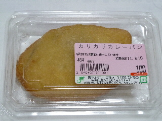

マルマン大社店のカリカリカレーパン
2011/06/10
スーパーのマルマン大社店で売ってたカリカリカレーパンです。
お惣菜ってことで、タッパー入りです。

持って帰って時間が経ってから食べたため、パリパリとした食感ではありませんでした。
でも、ふっくらやわらかいパンと、甘めのカレーがあっててマイルドな味わいでした。
島根県出雲市大社町入南608-1
閉店しました。
2011/06/10
スーパーのマルマン大社店で売ってたカリカリカレーパンです。
お惣菜ってことで、タッパー入りです。

持って帰って時間が経ってから食べたため、パリパリとした食感ではありませんでした。
でも、ふっくらやわらかいパンと、甘めのカレーがあっててマイルドな味わいでした。